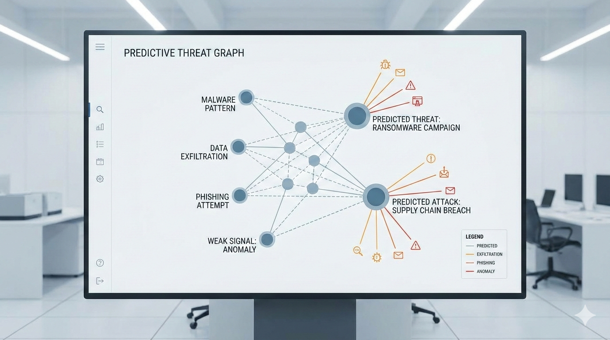
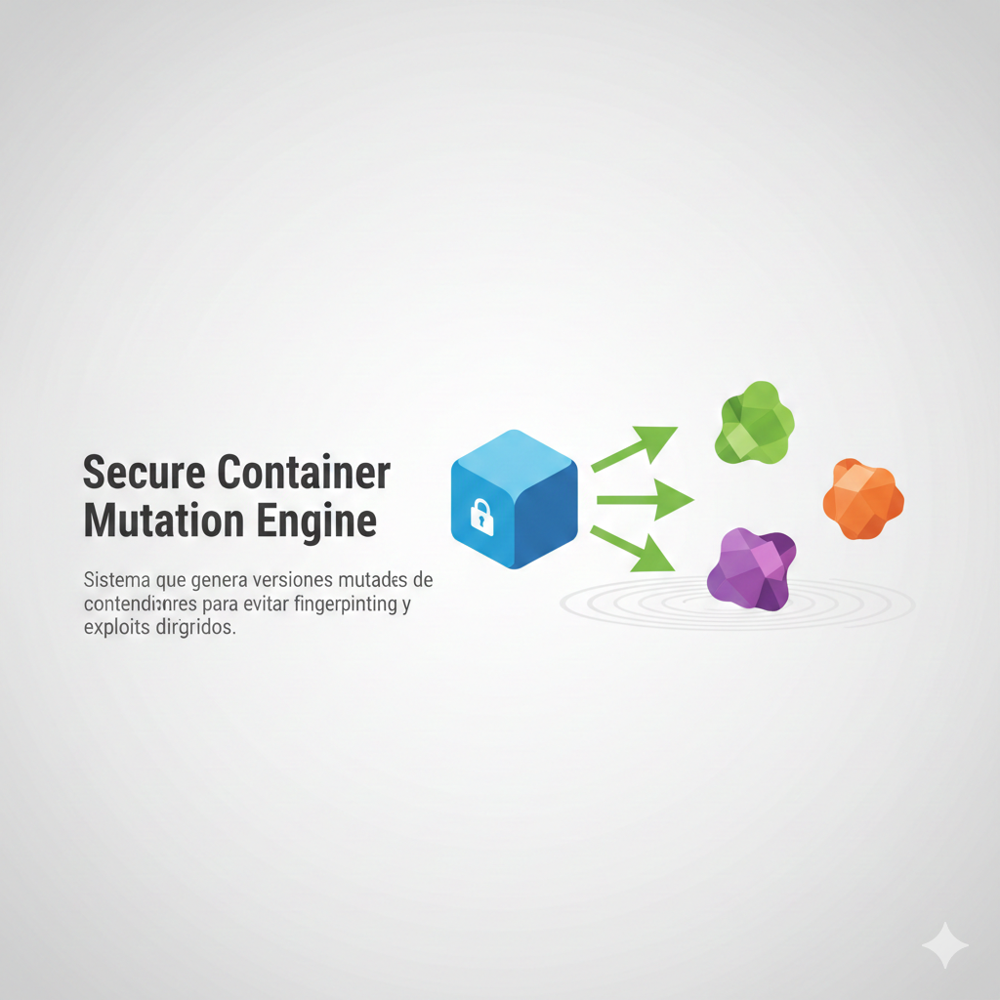

Basic Firewall Deployment with pfSense
This project teaches the fundamentals of network perimeter security and how firewalls enforce organizational policies.

Network Segmentation Using VLANs
Students learn how segmentation reduces attack surfaces and prevents unauthorized lateral movement.
Secure Remote Access with a VPN Server
Shows how VPNs protect remote connections and prevent data interception.

Intrusion Detection with Snort
Introduces intrusion detection, rule creation, and alert analysis.
ARP Spoofing Attack and Mitigation Lab
Helps students understand man‑in‑the‑middle attacks and how to prevent them.

Linux Server Hardening
Teaches foundational system‑hardening techniques.

Encrypted Backup System
Shows how encryption protects data at rest and how backups are automated.

Security Monitoring with Wazuh
Introduces SIEM concepts and real‑time monitoring.

Secure User and Permission Management
Teaches proper access control and auditing.

Implementing Two‑Factor Authentication on Linux
Demonstrates how MFA strengthens authentication.